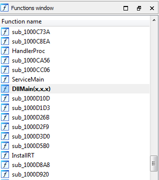
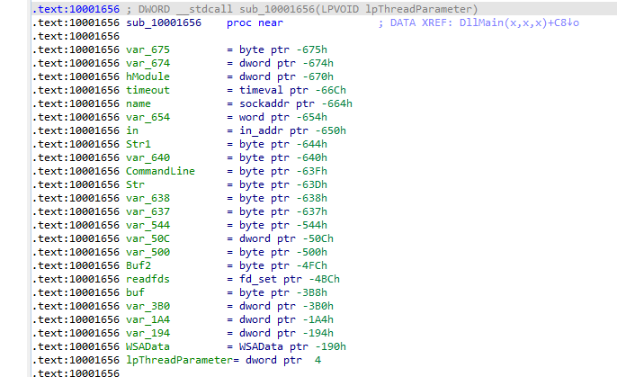
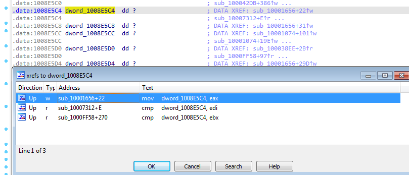
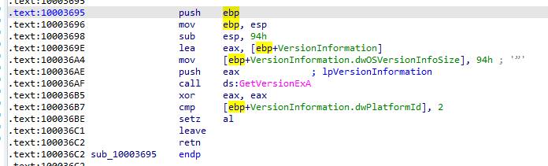
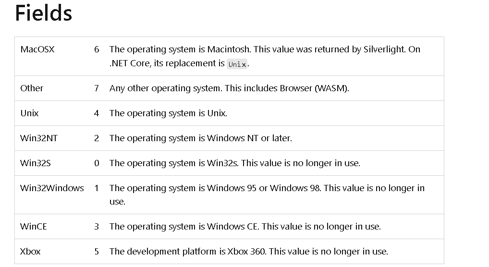

Practical Malware Analysis - Lab 5
Lab 5-1
Q1: What is the address of DllMain?
When i loaded the dll into IDA Pro i was directed to the DllMain at address 1000D02E
We can also search for the DllMain in Functions window
Q2: Use the Imports window to browse to gethostbyname. Where is the import located?
Viewing the Imports window then searching for gethostbyname we find it referenced at address 100163CC
Q3: How many functions call gethostbyname?
Using Xref (by pressing x on its idata address ). It was called 9 times with 5 times from unique methods
Q4: Focusing on the call to gethostbyname located at 0x10001757, can you figure out which DNS request will be made?
Pressing g to jump to 0x10001757 scrolling up we find the argument to the call pushed is the EAX Which
Contains Data String reference address added with 0x0D which is 13 in decimal
Going to the reference address by clicking twice on it and pressing U to undefine data then going up 13 places
and pressing A to redefine at that offset +13 We get pics.praticalmalwareanalysis.com
Q5: How many local variables has IDA Pro recognized for the subroutine at 0x10001656?
Jumping to same address we find 24 variable
Q6: How many parameters has IDA Pro recognized for the subroutine at 0x10001656?
Arguments passed to subroutine are referenced by positive value (with respect to ebp) and local variable negative values
we notice only lpThreadParameter is the only parameter
Q7: Use the Strings window to locate the string cmd.exe /c in the disassembly. Where is it located?
At 100101D0
Q8: What is happening in the area of code that references cmd.exe /c?
scrolling up we find string reference at 1001009D “hi master” going to that offset we find “remote shell” which
sounds like a C&C session what this area of code opens
Q9: In the same area, at 0x100101C8, it looks like dword_1008E5C4 is a global variable that helps decide which path to take. How does the malware set dword_1008E5C4? (Hint: Use dword_1008E5C4’s cross-references.)
Going to dword_1008E5C4 offset by double clicking
Pressing x to see the places where it was referenced to see how it was set. Going to the most likely place it was set in mov dword_1008E5C4,eax
Noticed that a function is called then the return (EAX) is passed to the global variable dword_1008E5C4
Going into the function. It begins with initializing the stack then allocating space on the stack (for variables and other data) Then initializing the structure VersionInformation to be passed (its pointer) into GetVersionEXA, setting eax to zero , then comparing dwPlatformId if equal to 2 and setting 1 (True) or 0 (False) to al register the result register then returning
The Function in overall checks the OS is Win32NT and acts on it
Q10: A few hundred lines into the subroutine at 0x1000FF58, a series of comparisons use memcmp to compare strings. What happens if the string comparison to robotwork is successful (when memcmp returns 0)?
Q11: What does the export PSLIST do?
Q12: Use the graph mode to graph the cross-references from sub_10004E79. Which API functions could be called by entering this function? Based on the API functions alone, what could you rename this function?
Q13: How many Windows API functions does DllMain call directly? How many at a depth of 2?
Q14: At 0x10001358, there is a call to Sleep (an API function that takes one parameter containing the number of milliseconds to sleep). Looking backward through the code, how long will the program sleep if this code executes?
Q15: At 0x10001701 is a call to socket. What are the three parameters?